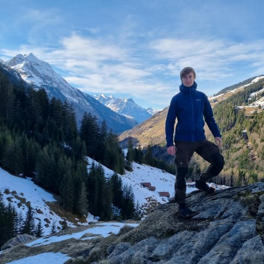
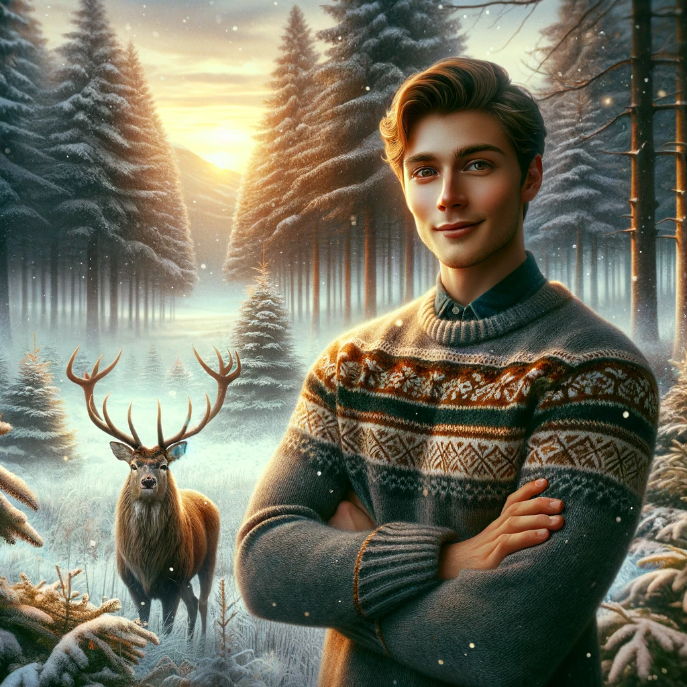

I'm an enthusiastic developer passionate about crafting software and doing fun projects 🛠️. Welcome
to
my little website!
Here, you'll find a glimpse into who I am and what I love to do. Feel free to explore and
stay a while! 🚀

PhD in Computer Science
Østfold University College, Norway | 2024 - Present
Software Engineer
u-Blox, Switzerland | 2023 - 2024
Master’s Degree in Computer Science
VSB - Technical University of Ostrava | 2022 - 2023
Exchange Student
University of Stavanger, Norway | 2021 - 2022
Bachelor’s Degree in Computer Science
VSB - Technical University of Ostrava | 2018 - 2021
I love working on projects that mix technology with creativity. My main focus is programming embedded systems and IoT solutions, where I collect data from various sensors and make it useful. I enjoy writing efficient code that runs on small devices, making things smarter and more connected. But I don't stop there — I also like building websites and Android applications that help me organize or display importantinformation in a simple way.

Another passion of mine is computer graphics. I've worked on several projects using OpenGL and ray tracing, experimenting with rendering techniques and realistic lighting. One of my biggest dreams is to create my own RPG game, something inspired by Gothic, which I’ve been a huge fan of for years. I'm also really looking forward to the Gothic remake and hoping it will stay true to the original’s atmosphere Designing worlds, crafting game mechanics, and bringing ideas to life through code is something that excites me.
When I’m not coding, I love to stay active. I practice martial arts, including HEMA (Historical European Martial Arts), which lets me experience old fighting techniques firsthand. I also enjoy spending time with my friends and family, hiking in nature, and playing the guitar whenever I want to relax. These activities keep me balanced and inspired, giving me new energy for my projects.
Here are some of my favourite projects I've worked on over the years.
A car application for interpretting ITS messages and visualizing traffic!
If you’d like to get in touch, feel free to reach out through any of the platforms below!